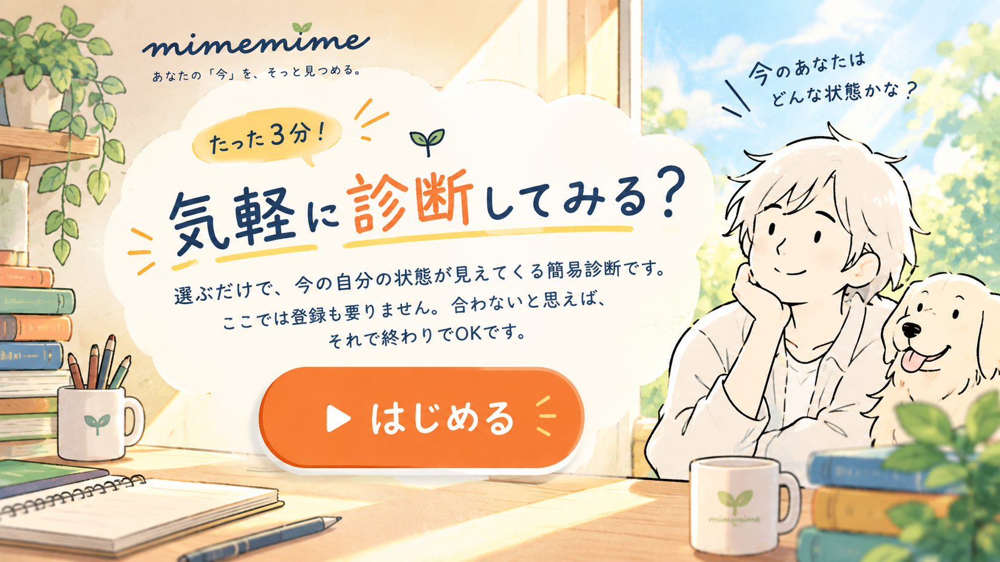
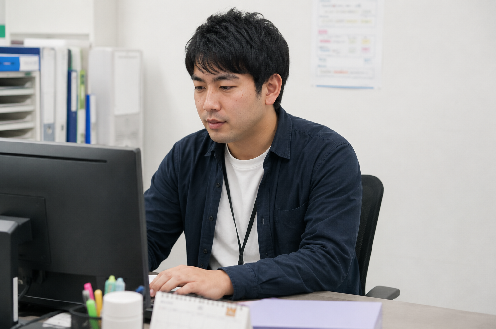

支援の現場を知る一人が、あなたのペースで話を聞きます。休職中の方も、情報より先に、気持ちから。
復帰も転職も、まだどちらも選べずにいる。
今は決めなくて大丈夫。まず状況だけ整理しよう。
本音を話す前に、面接が終わってしまう。
それ、すごくわかる。まずは私に話してみて。
「わがまま」だと思われそうで言えない。
伝え方だけ、一緒に練習してみようか。
制度も情報も多すぎて、逆に動けない。
大丈夫、順番はこっちで一緒に整理するよ。
家族にも、支援員にも、少し遠慮してしまう。
ここでは、遠慮しなくて大丈夫。
← スワイプできます →
通所が難しくても、自宅から。顔出しなし・アイコン参加もOKです。
これまでに30名を超える方の就労・復職をサポートしてきました。

働き方の多様さを写真で伝える構成。※写真はイメージです。
経理・事務のお仕事

在宅・PC事務のお仕事
検品・軽作業のお仕事
清掃・接客のお仕事
← スワイプできます →
人と話すのが怖かった私が、初めて長く働けています。
休職で消えていた自信が、少しずつ戻ってきました。
面接で言葉に詰まっていた私が、今は自分から話せます。
誰にも言えなかった不安を、初めて話せました。
3ヶ月で辞めた前の職場のことを、初めて誰かに話せました。
診断書を出すのが怖かったけど、話したら少し楽になりました。
復職か転職か決められなかった私が、今は前を向けています。
配慮をお願いするのが苦手だった私が、伝え方を覚えました。
発作が怖くて外に出られなかった私が、通所できています。
家族に分かってもらえないと思っていたけど、話し方を一緒に考えてもらえました。
面接の練習を重ねて、「大丈夫です」以外の言葉が出ました。
長くひきこもっていた私が、少しずつ外に出られています。
障害者雇用に踏み切れなかった私が、自分に合う働き方を見つけました。
感情のコントロールが苦手な私に、根気よく付き合ってもらえました。
休職中ずっと1人だったけど、話せる相手ができました。
早期離職を繰り返していた私が、初めて長く続けられています。
人と話すのが怖かった私が、初めて長く働けています。
休職で消えていた自信が、少しずつ戻ってきました。
面接で言葉に詰まっていた私が、今は自分から話せます。
誰にも言えなかった不安を、初めて話せました。
3ヶ月で辞めた前の職場のことを、初めて誰かに話せました。
診断書を出すのが怖かったけど、話したら少し楽になりました。
復職か転職か決められなかった私が、今は前を向けています。
配慮をお願いするのが苦手だった私が、伝え方を覚えました。
発作が怖くて外に出られなかった私が、通所できています。
家族に分かってもらえないと思っていたけど、話し方を一緒に考えてもらえました。
面接の練習を重ねて、「大丈夫です」以外の言葉が出ました。
長くひきこもっていた私が、少しずつ外に出られています。
障害者雇用に踏み切れなかった私が、自分に合う働き方を見つけました。
感情のコントロールが苦手な私に、根気よく付き合ってもらえました。
休職中ずっと1人だったけど、話せる相手ができました。
早期離職を繰り返していた私が、初めて長く続けられています。